Terugblik / HerdenkenСпогади / Вшанування
Remember
Together
2023
Een ontmoeting in beelden.Зустріч у світлинах.
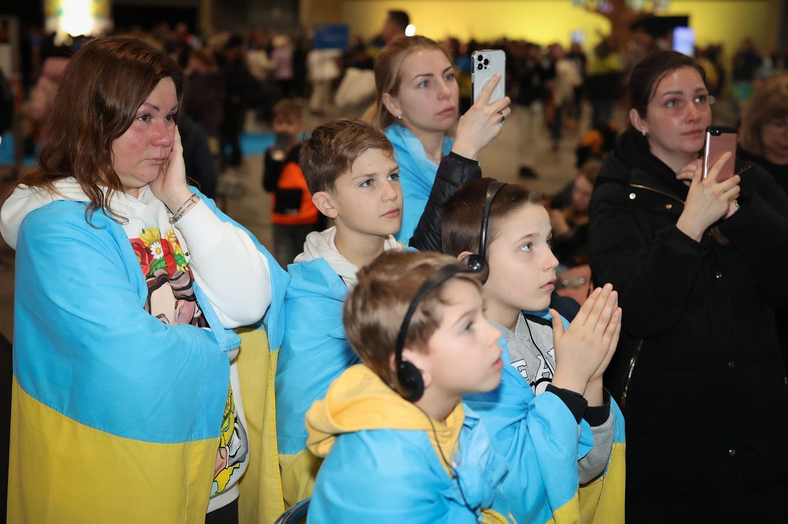
Momenten om
te bewaren.Миті, які варто
зберегти.
24 februari 2023 was een moeilijke en emotionele dag voor Oekraïners over de hele wereld. Vital’nya wilde een moment creëren waarop mensen samen konden komen, verdriet konden delen en steun bij elkaar konden vinden.24 лютого 2023 року було важким та емоційним днем для українців у всьому світі. Вітальня прагнула створити подію, де люди могли б зібратися разом, розділити горе та підтримати одне одного.
Aan de bijeenkomst ging een intensieve voorbereiding vooraf, met zorgen en slapeloze nachten, maar ook met vreugde en samenwerking. De betrokkenheid van de aanwezigen overtrof de verwachtingen van het team.Події передувала напружена підготовка: хвилювання й безсонні ночі, але також радість і спільна праця. Підтримка присутніх перевершила очікування команди.
De foto’s bewaren die dag: aandachtig luisterende bezoekers, Oekraïense vlaggen, bloemenkransen, tulpen en ontmoetingen tussen generaties. Dank aan iedereen die kwam en deze dag samen met ons doorbracht.Світлини зберігають цей день: уважних слухачів, українські прапори, квіткові вінки, тюльпани та зустрічі різних поколінь. Дякуємо кожному, хто прийшов і провів цей день із нами.
Gebaseerd op Vital’nya’s Instagram-terugblik van 8 maart 2023 over de bijeenkomst op 24 februari. Fotocredits staan bij de betreffende beelden.На основі допису Вітальні в Instagram від 8 березня 2023 року про захід 24 лютого. Авторство зазначене біля відповідних світлин.
In beeldenУ світлинах
Klik op een foto om deze te vergroten.Натисніть на світлину, щоб збільшити.

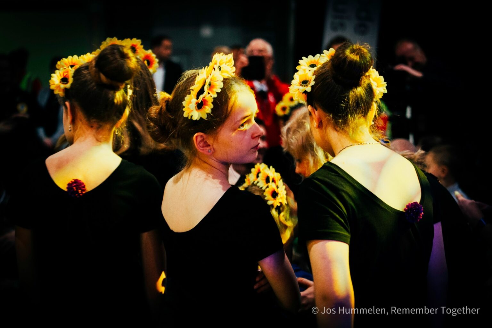

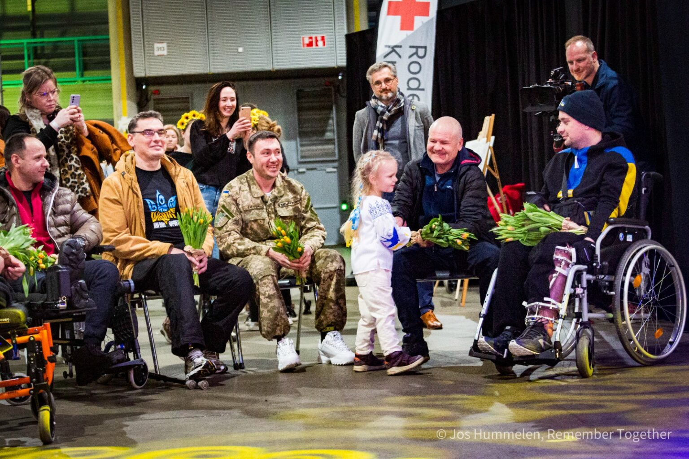

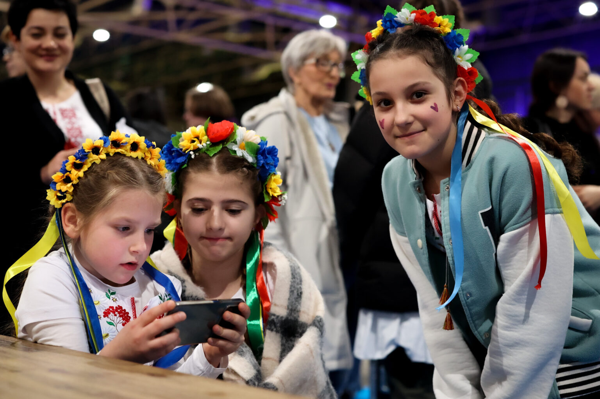


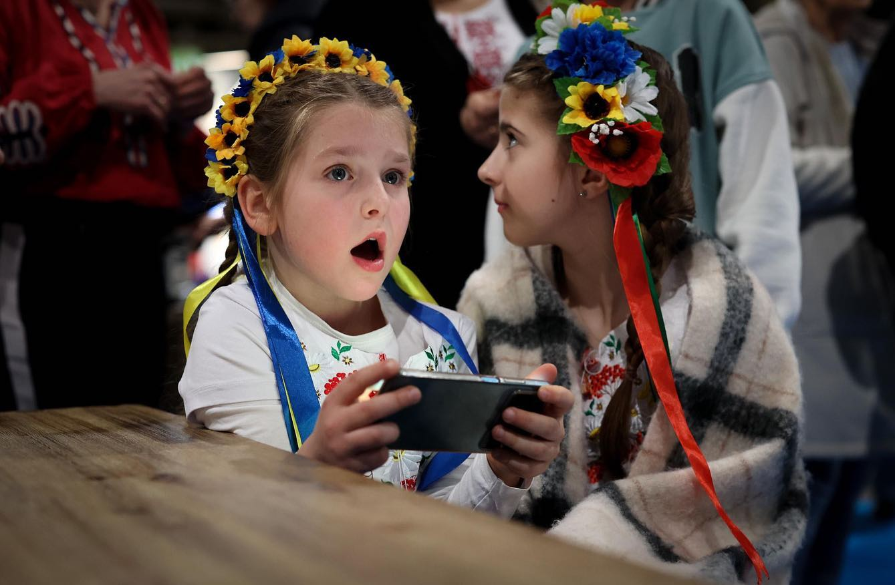

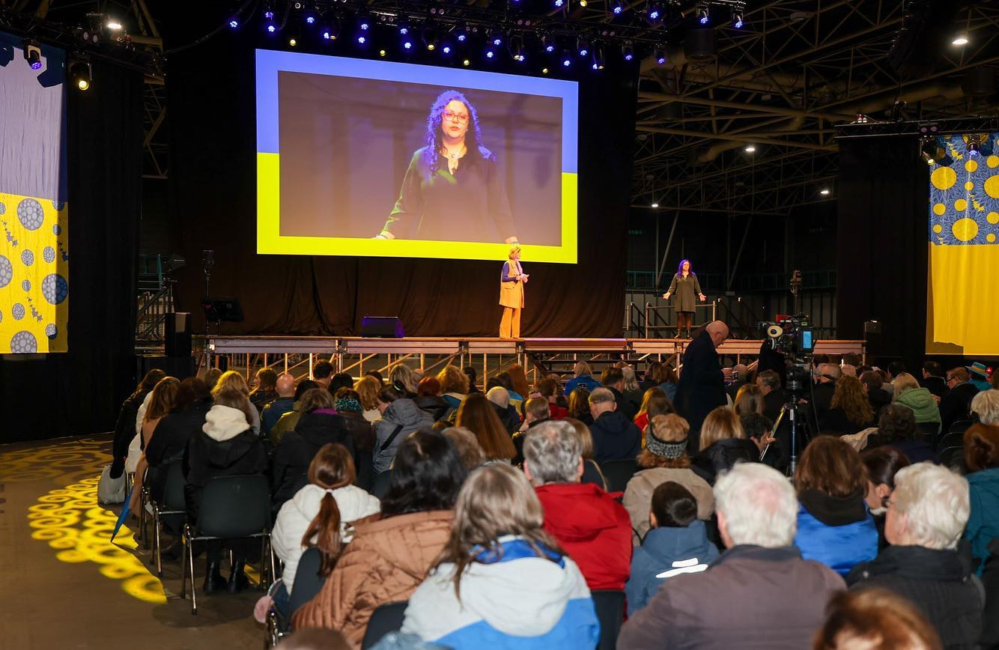

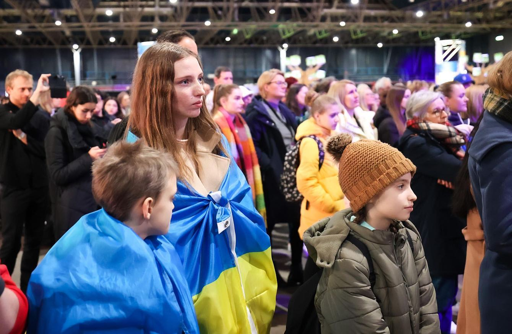

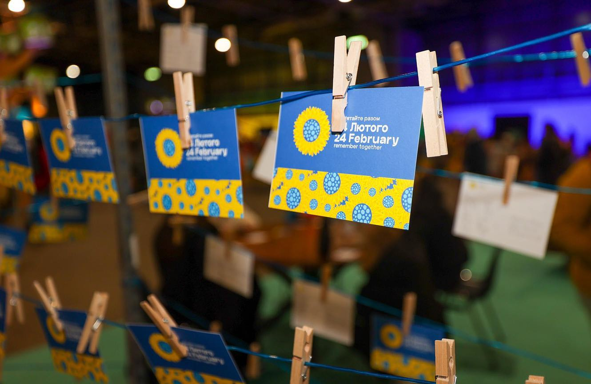

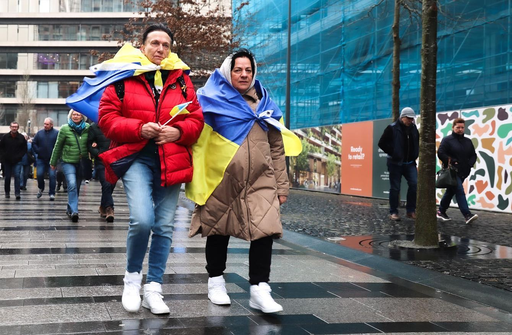

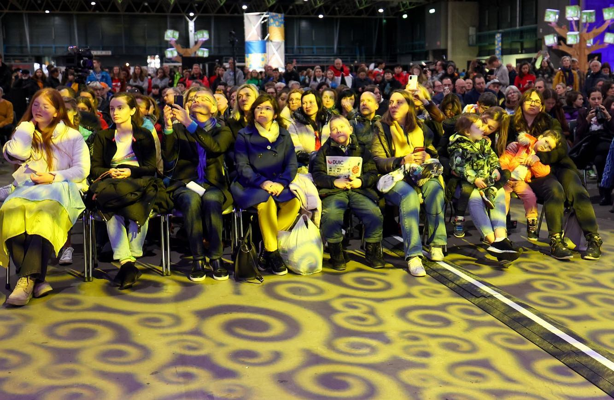

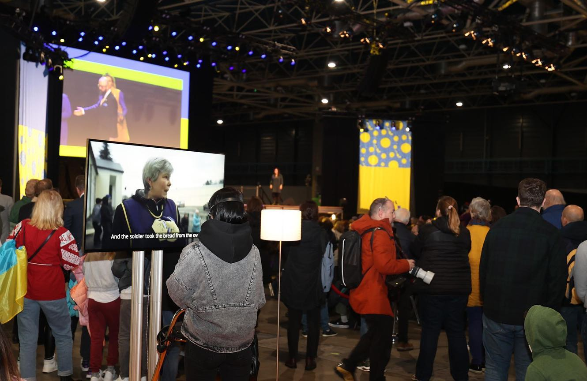

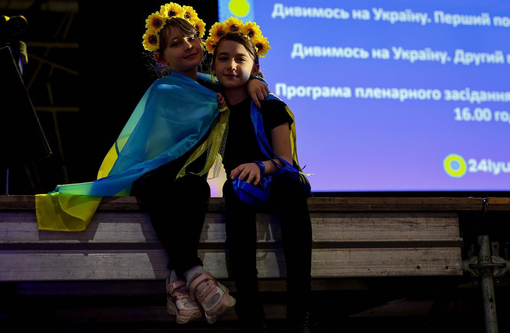

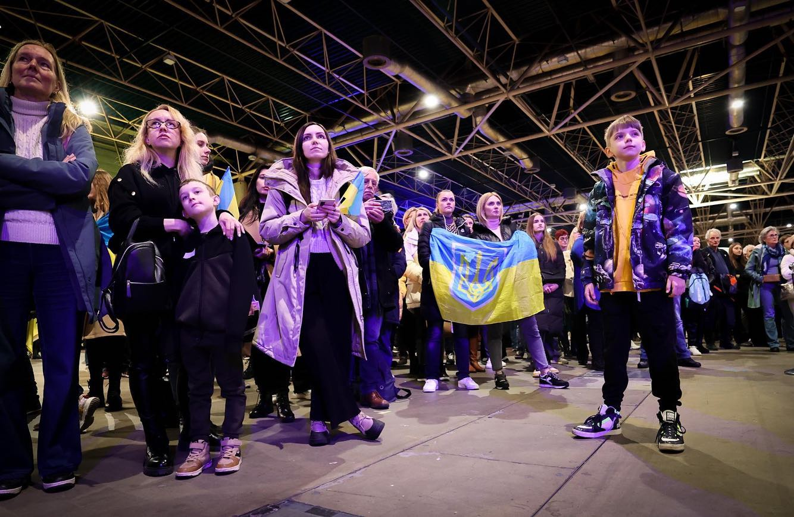

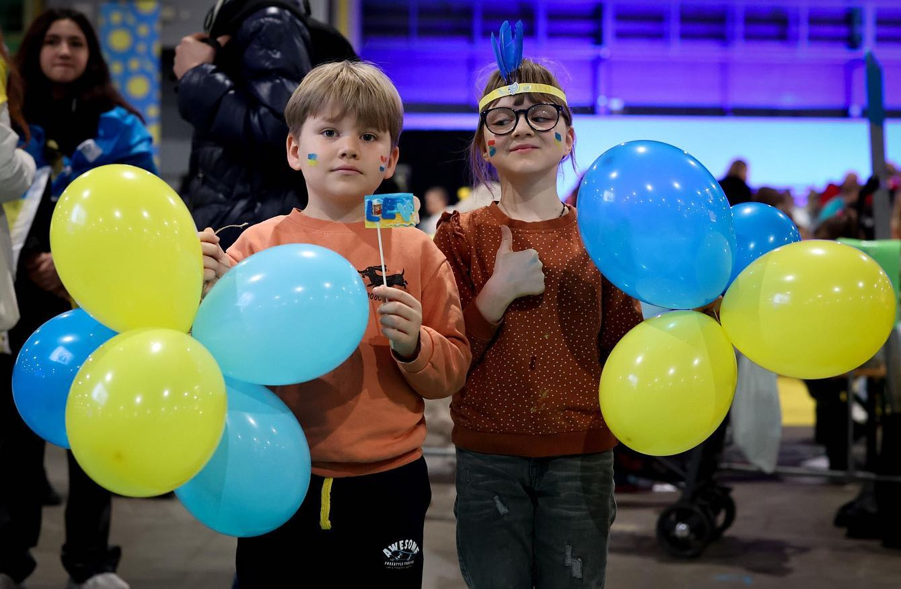

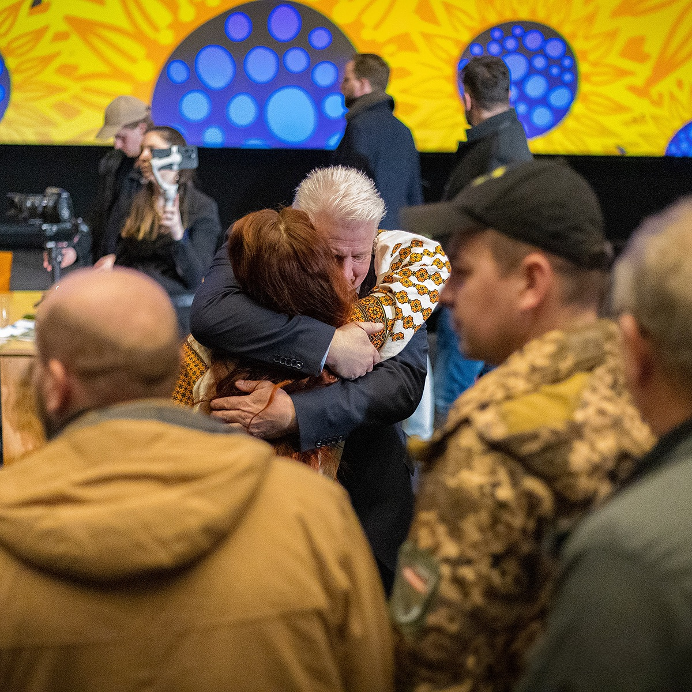